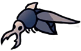
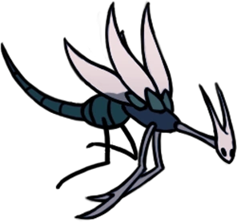
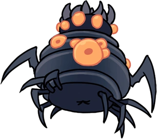
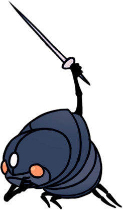

Colisée des Fous
Une zone située au sommet des Frontières du Royaume. Il contient une arène où le Chevalier peut participer à trois épreuves dans lesquelles il affronte plusieurs vagues d'ennemis.
Carte
Lore
Les guerriers les plus forts de tous les coins du monde se retrouvent à Hallownest pour s'affronter dans le Colisée, où seuls les plus forts survivent. Les participants se voient offrir la chance de devenir plus qu'une simple bestiole idiote, alors qu'ils visent le titre de champion du Colisée.
Le Colisée capture des insectes pour les faire combattre dans l'arène et élève également certaines créatures comme le Baldur Endurci et le Moustique Cuirassé pour le combat. Le Seigneur Fou supervisait les combats dans l'arène, et certains insectes étaient déterminés à lui prouver leur force. Les cadavres de ceux qui meurent dans l'arène sont jetés dans le gouffre sous le Colisée.
Un jour, le Seigneur Fou est mort, bien que son cadavre se trouve toujours sur le trône de l'arène. Le Colisée lui-même continue de fonctionner, même après la propagation de L’Infection. Bien que les participants soient infectés, la foule applaudit toujours et les guerriers dans la fosse des guerriers sous le Colisée ne sont pas agressifs.
Connexions
Le Colisée des Fous est relié à cette zone :
Ennemis
-
Fou Cuirassé
Un guerrier combattant pour la gloire dans le Colisée des Fous. S'approche prudemment de son adversaire en se protégeant derrière son bouclier. Attendra le bon moment pour attaquer. Ce Colisée est un endroit étrange où certains insectes combattent jusqu'à la mort pendant que d'autres regardent les combats. Je ne comprends pas ce genre de rituels. Si vous décidez de vous y rendre, restez constamment sur vos gardes.
-
Fou Robuste
Un guerrier combattant pour la gloire dans le Colisée des Fous. Utilise des lames en forme de demi-lune pour abattre ses adversaires. Vous pouvez retourner les armes tournoyantes de ce guerrier contre lui, en les frappant de votre aiguillon. Très utile, si vous êtes bloqué ou que vous ne pouvez pas les esquiver.
-
Aspid Sauvage

Forme ancestrale et plus sauvage des Aspids. Autrefois considérées comme une espèce disparut, elles ont réapparu aux frontières du royaume. Ces adversaires cruels vous embusqueront et vous attaqueront sans relâche avec leur venin brûlant. C'est étonnant que leur descendance soit si faible. Si je décide un jour de faire des enfants, j'espère qu'est seront plus fort que moi...
-
Mouche Vengeresse
Un prédateur volant. Poursuis ses proies sans relâche. Ces féroces petits chasseurs pourchasseront même les créatures qui font plusieurs fois leur taille. Admirable! Cependant, j’en ai dévoré des centaines sans avoir fait le moindre effort, car ce sont des créatures très faibles.
-
Gruzzer Instable
Un Gruzzer dont le corps est enflé par l'infection. Son corps est prêt à éclater. Un horrible fluide visqueux et un gaz nocif commencent à couler plus haut. La source de cette pestilence existe-t-elle ? Si c'est le cas, je ne l'ai jamais vue.
-
Fou Massif
Un guerrier combattant pour la gloire dans le Colisée des Fous. Charge agressivement ses adversaires. Grand, volumineux et combattant pour sa vie. Ne sous-estimez pas ce combattant ! Il se déplace très rapidement malgré sa forte carrure. Etonnamment, le visage qu'il cache sous son masque est de toute beauté.
-
Fou Ailé

Un guerrier combattant pour la gloire dans le Colisée des Fous. Vole hors de portée de son adversaire, puis s'élance avec son dard en avant pour tuer. Qu'est-ce que ces guerriers peuvent bien espérer trouver en combattant dans le Colisée ? Sont-ils des esclaves, ou des prisonniers, ou choisissent-ils de se battre de leur plein gré ?
-
Moustique Cuirassé
Un moustique endurcit, élevé dans le Colisée des Fous pour combattre. Plus difficile à tuer et plus agressif que son ancêre sauvage. Des créatures fortes et rapides ! Lorsqu'elles se penchent en arrière, vous pouvez choisir de vous écarter ou de vous préparer à contre-attaquer.
-
Belfly

Une créature possédant de fines ailes qui dissimulent un ventre très instable. Elles sonneront leur propre vie pour protéger leur territoire. Une créature coléreuse sans égard pour sa propre vie. Une créature qui ne connait pas la peur... peut-on vraiment l'appeler "proie" ?
-
Sautilleur

Une créature qui saute sur ses proies. Utilise son appendice allongé et pointu pour aspirer les fluides vitaux. Le ventre de ce voleur est rempli du sang qu'il a aspiré du corps d'autres bêtes. Si vous le maintenez au-dessus d'un feu, son ventre va s'accroître jusqu'à ce qu'il explose en un geyser de fluides.
-
Larve Caméléon

Imite l'apparence d'une créature inoffensive pour attirer ses proies. Attirer un ennemi en faisant semblant d'être une petite larve sans défense est une technique très rusée. Malheureusement pour elles, je dévore ce genre de larves dès que j'en trouve.
-
Baldur Endurci
Un Baldur endurci, élevé dans le Colisée des Fous pour combattre. Plus difficile à tuer et plus agressif que son ancêtre sauvage. Ces créatures... Je n'en ai jamais vu qui est atteint l'âge adulte. Je suppose qu'elles ne vivent pas assez longtemps pour cela.
-
Combattant Obble
Une créature élevée dans le Colisée des Fous. Bien qu'elle soit entraînée au combat, ses déplacements et ses attaques sont encore très chaotiques. Ces créatures se sont fabriqué un petit masque ! Une telle extravagence leur sera-t-elle vraiment utile ?
-
Mouche Vengeresse Enragée

Une Mouche Vengeresse dont le corps a été déformé par une infection persistante. Très agressive. Une infection qui se transmet de créature en créature et qui donne de la force et du courage. Cependant, l'infection semble aussi asservir toute volonté. Pourriez-vous faire un tel pacte ?
-
Loodle de la mort
Loodle équipé d'un heaume. L'art de tuer lui a été enseigné. Ces créatures paraissent féroces, mais elles ont beaucoup de difficultés à viser correctement leur cible. Observez bien leurs mouvements et attaquez dès qu'une opportunité se présente. Gardez leur heaume comme trophée.
-
Garpede

Un fouisseur géant recouvert d'une carapace renforcée. Arpente inlassablement les tunnels du Nid-Profond. Dotées d'une force monstrueuses, ces créatures ignorent toutes les attaques que leur carapace cuirassée subit. Heureusement, si vous évitez de croiser leur chemin, elles vous laisseront en paix.
-
Mante Traître

Une créature appartenant autrefois à la tribu des mantes religieuses. Il a été chassé et rendu fou par l'infection. Faire ou ne pas faire parti d'un tribu. Je ne comprends pas très bien ce que ça change ou comment ça fonctionne. Je ne fais moi-même partie d'aucune tribu !
-
Mante Petra
Une créature qui rôde dans les buissons. Attaque à distance en faisant tournoyer des faux de vent dans les airs. Elles vous attaquerons à distance sans relâche. Approchez vous d'elles et attaquez rapidement. Leur corps est fragile et peut être facilement transpercé avec la pointe de votre aiguillon.
-
Tourmenteur de l’Âme
Un insecte très intelligent ! Utilise les connaissances arcaniques qu'elle possède pour transformer l'âme en des sorts vicieux. J'ai déjà entendu d'autre créatures parler de "l'âme", mais j'ignore de quoi il s'agit. Par exemple, je sais que la viande fraichement tuée à bien meilleur goût. Est-ce que c'est parce que "l'âme" s'y accroche encore ?
-
Erreur

Une créature qui était autrefois très intelligente. Déformée par une mauvaise utilisation de l'Ame. Ces créatures ont commis l'erreur de jouer avec l'âme des autres créatures. Maintenant déformées, elles rampent dans l'obscurité de leur sanctuaire comme des limaces, en espérant que leurs vieux frères leur créeront de nouveaux corps.
-
Folly

Une créature qui était autrefois très intelligente. Déformée par une mauvaise utilisation de l'Ame. J'ai entendu dire que ces fous recherchaient le secret de l'immortalité. Vivre éternellement... Je n'ai jamais rien entendu de si choquant et révoltant.
-
Manipulateur Voltaïque
Un insecte cultivé. Il a adapté les enseignements du Sanctuaire de l'Âme en un art de combat mortel. Attaque en projetant des charges électriques.
-
Mawlek Inférieur
Attaque en crachant de l’acide et en entaillant le corps de son ennemi avec ses pinces frontales. Si vous essayez de les affronter à distance, ces créatures cracheront des boules collantes et gluantes de suc gastrique ignoble. Approchez-vous rapidement et attaquez avec détermination.
-
Rôdeuse Pâle
Une championne oubliée du Colisée, retirée du monde à cause d'une étrange obsession. Cette étrange créature ne souffre pas de la maladie qui envahit les cavernes, elle n'en a même pas conscience. Sa folie est la sienne.
Boss de la Zone
Mouche Vengeresse Royale

Patriarche d'une colonie de mouches vengeresses. Fonce sur les intrus et pousse un cri perçant pour appeler du renfort si elles se sentent menacées. Une créature répugnante qui aime grignoter tout ce qu'elle trouve sur le sol poussiéreux des cavernes. Quand elles sont en danger, elles poussent un cri qui est très irritant. Je vous conseillerais de les tuer rapidement.
Mère Gruz

Un Gruzzer qui a atteint l'âge adulte, portant sa couvée dans son ventre. Attaque en projetant son énorme corps sur ses ennemis. Bizarrement, ce monstre ne pond pas ses œufs, mais les gardent dans son corps bien gras. Cette étrange pratique semble épuiser la créature, la rendant somnolente et vulnérable. Exploitez cette faiblesse !
Mawlek Maussade
Une bête féroce, mais extrêmement sociale. Elle devient agressive si elle ne peut pas s'amuser avec ceux de son espèce. J'entends parfois cette bête crier quand je rôde dans les cavernes, bien que je ne l'aie jamais vue de mes propres yeux. Qui appelle-t-elle de la sorte ? Pour autant que je sache, nul ne répond à ses cris.
Guerrier de l’Âme
Les Guerriers de l'Âme font partie des Érudits du Sanctuaire de l'Âme qui améliorent leurs techniques de combat grâce à de l'Âme recueillie. ependant, contrairement aux autres Érudits du Sanctuaire, ils ne semblent pas se souvenir des origines de leurs pouvoirs.
Dompteur de dieux

Le Dompteur de dieux est une guerrière vétérane du Colisée des Fous, assumant le rôle de cheffe de la dernière et la plus brutale épreuve. Elle compense sa petite taille par la force de sa Bête apprivoisée, aux côtés de laquelle elle combat. Elles présentent toutes deux des signes de L'Infection.
Oblobble

Les Oblobbles sont des cousins bien plus grands et larges des Obbles. Ils sont capables de se déplacer plus rapidement que leur homologue miniature et de tirer bien plus de projectiles. Le Chevalier peut seulement en rencontrer dans le Colisée des Fous, au bout de l'Épreuve du Conquérant. Ces Oblobbles sont élevés et enchaînés dans le Colisée pour participer à la lutte contre les gladiateurs. Tuer l'un enrage l'autre et le fait bouger et attaquer encore plus rapidement. Comme la plupart des autres créatures d'Hallownest, elles sont infectées, bien qu'elles n'explosent pas à leur mort.
Zote Le Redoutable
Zote est un voyageur étranger qui est venu dans le royaume d'Hallownest pour tenir une promesse. Il a baptisé son aiguillon "Portemort" parce que les noms sont censés avoir un pouvoir. Malheureusement, comme il est fait de bois de coquillage, il ne peut pas infliger de dégâts. Bien qu'il prétende être le guerrier le plus fort du pays, il se retrouve piégé par de trop faibles ennemis ou s'attribue la gloire des exploits d'un autre insecte. Il considère Le Chevalier comme étant inférieur à lui et l'accuse de se mettre constamment en travers de son chemin.
Évènements
- Obtention d'une clé simple
- Obtention d'un minerai pâle
- Rencontre de Nigaud
- Rencontre de Tiso
- Rencontre de Zote le Redoutable #5